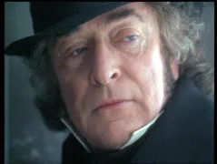

Michael Caine is Ebenezer Scrooge. Despite always being a fan, his playing Scrooge was another reservation I had. My imagination couldn’t picture him in the role. I was wrong on that count, too. He’s marvelous in the role. Most impressive to me since my first viewing the movie was the seriousness he gave the role while predominantly surrounded by puppets. His performance of playing the role 100% straight instead of falling into any buffoonery is a large contributor to the movie’s quality.
